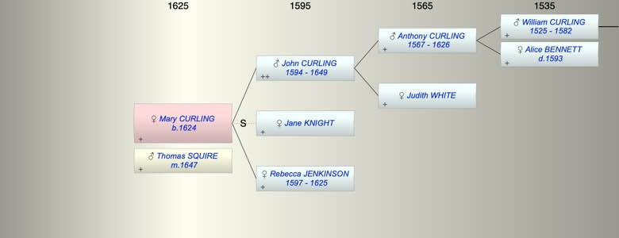

| [Index] |
| Mary CURLING (1624 - ) |
|  |
| b. 1624 at St Peter, Thanet |
| m. 02 Aug 1647 Thomas SQUIRE at St Dunstan, Canterbury |
| Parents: |
| John CURLING (1594 - 1649) |
| Rebecca JENKINSON (1597 - 1625) |
| Siblings (1): |
| Robert CURLING (1620 - 1621) |
| Events in Mary CURLING (1624 - )'s life | |||||
| Date | Age | Event | Place | Notes | Src |
| 1624 | Mary CURLING was born | St Peter, Thanet | Note 1 | ||
| Aug 1625 | 1 | Death of mother Rebecca JENKINSON (aged 28) | Note 2 | ||
| 02 Aug 1647 | 23 | Married Thomas SQUIRE | St Dunstan, Canterbury | Note 3 | |
| 1649 | 25 | Death of father John CURLING (aged 55) | |||
| Note 1: bap 17 Oct 1624 dau of John ex FMP PR |
| Note 2: buried St St Peter, Sandwich on 23 Aug 1625 wife of John ex FMP PR |
| Note 3: both of St Peter, Thanet ex East Kent Marriage Index. |
| Created on a Mac™ using iFamily for Mac™ on 8 Oct 2023 |